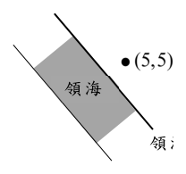
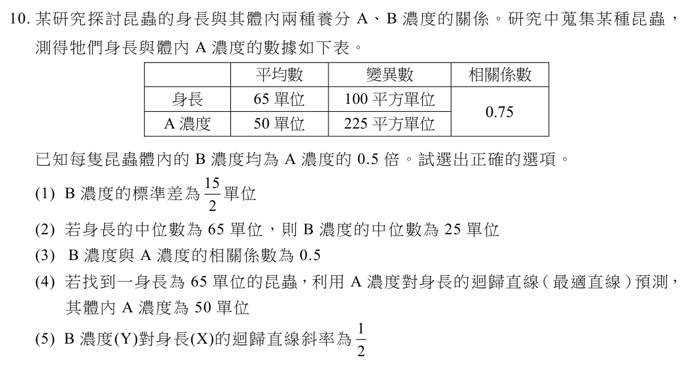
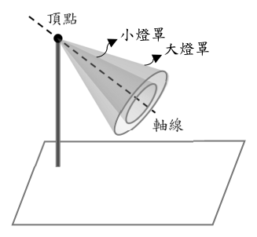
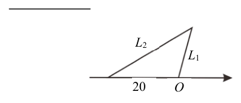
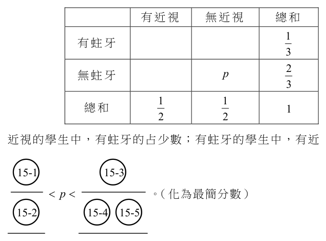
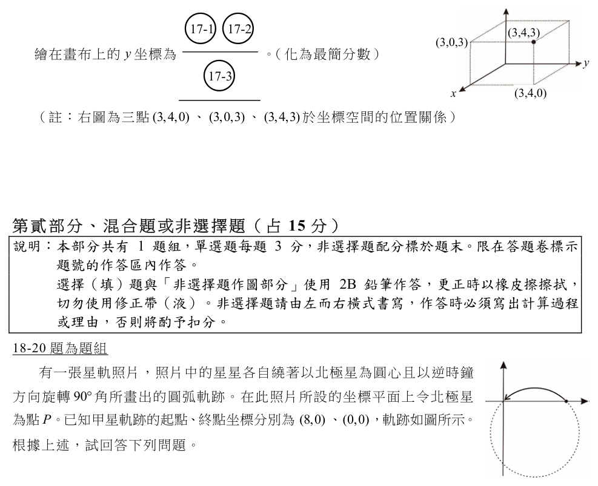

開卷有益 ／
學科能力測驗 ／ 數學B ／ 115 年115 年學科能力測驗數學B試題與答案
這一頁是民國 115 年學科能力測驗數學B的整份歷屆試題，共 20 題，題目與標準答案出自大考中心 學測歷年試題（依著作權法 §9，考試試題不受著作權保護），其中 20 題附有詳解。以下逐題列出題幹、選項與答案；要計時作答或記錄成績，請用線上練習。
線上作答這一科 →
全部 20 題
第 1 題
當標準值為 95，試選出有幾個整數 \(N\) 與標準值的誤差百分比 \(\dfrac{|N-95|}{95}\times100\%\) 小於 5%。
（A） 4 個（B） 5 個（C） 8 個（D） 9 個（E） 10 個答案：（D）
詳解與考點 正解：題幹給誤差百分比小於 5％，先化為絕對值不等式，再列出所有整數。|N−95|／95×100％＜5％，兩邊除以 100％得 |N−95|／95<0.05；兩邊乘 95 得 |N−95|＜4.75。故 −4.75<N−95<4.75，90.25<N<99.75。整數 N 為 91、92、93、94、95、96、97、98、99，共 9 個，故 D 正確。
A：4 個未依絕對值範圍完整列舉整數，故錯誤。
B：5 個只取接近 95 的部分整數，漏掉 91、92、98、99 等符合者。
C：8 個少算一個符合範圍的整數。
E：10 個會把不符合嚴格不等式範圍的端點外整數納入，故錯誤。
本題考點：誤差百分比——先將百分比改為小數再移項；絕對值不等式——|x−a|＜r 等價於 a−r<x<a+r；整數計數——依開區間逐一列出整數。
第 2 題
以計算機的自然對數按鍵 ln（即 \( \ln x = \log_e x \)）估算連續複利本利和 \( 100e^{\frac{3n}{100}} = 135 \) 所需期數 \( n \)，試選出等於 \( n \) 的選項。
（A） \( \dfrac{3}{100}\ln(135-100) \)（B） \( \dfrac{100}{3}\ln(135-100) \)（C） \( \dfrac{135}{100}\ln\left(\dfrac{3}{100}\right) \)（D） \( \dfrac{3}{100}\ln\left(\dfrac{135}{100}\right) \)（E） \( \dfrac{100}{3}\ln\left(\dfrac{135}{100}\right) \)答案：（E）
詳解與考點 正解：題幹給連續複利本利和 100e^(3n/100)=135，關鍵是未知數 n 在指數上，故先將指數函數化為比值，再取自然對數。100e^(3n/100)=135；兩邊同除以 100，得 e^(3n/100)=135/100；兩邊取 ln，得 ln(e^(3n/100))=ln(135/100)；因此 3n/100=ln(135/100)；兩邊同乘 100/3，得 n=(100/3)ln(135/100)。故 E 為正解。
A：ln（135-100）把本利和差額 35 放入對數，未先將 100e^(3n/100)=135 除以 100，錯在對數內的量。
B：雖有係數 100/3，仍把對數內誤寫成 135-100，而非 135/100。
C：將 135/100 與 3/100 的位置及運算關係混淆，不由 3n/100=ln(135/100)推出。
D：對數內的 135/100 正確，但將解 n 時應乘的倒數 100/3 誤寫成 3/100。它看起來對，是因為保留了正確的本利比，卻忽略移除指數係數時必須除以 3/100。
本題考點：指數方程式與自然對數——先把 e 的指數項孤立，再用 ln(e^x)=x 消去指數；解 ax=b 時要乘 1/a，因此 3n/100=ln(135/100)須乘 100/3。
第 3 題
已知實數二階方陣 \(A\) 滿足 \(A\begin{bmatrix}1\\1\end{bmatrix}=\begin{bmatrix}0\\1\end{bmatrix}\) 以及 \(A\begin{bmatrix}1\\-1\end{bmatrix}=\begin{bmatrix}1\\0\end{bmatrix}\)。試選出 \(A\) 的反方陣。
（A） \(\begin{bmatrix}0 & 1\\1 & 0\end{bmatrix}\)（B） \(\begin{bmatrix}1 & 1\\-1 & 1\end{bmatrix}\)（C） \(\begin{bmatrix}1 & 1\\1 & -1\end{bmatrix}\)（D） \(\begin{bmatrix}1 & \frac{1}{2}\\-\frac{1}{2} & 1\end{bmatrix}\)（E） \(\begin{bmatrix}1 & -\frac{1}{2}\\\frac{1}{2} & 1\end{bmatrix}\)答案：（B）
詳解與考點 正解：題目給的是 A 將兩個向量映到何處，求反方陣時要把結果向量映回原向量。由 A[1,1]ᵀ=[0,1]ᵀ，可得 A⁻¹[0,1]ᵀ=[1,1]ᵀ；由 A[1,-1]ᵀ=[1,0]ᵀ，可得 A⁻¹[1,0]ᵀ=[1,-1]ᵀ。A⁻¹ 的第一欄是 A⁻¹[1,0]ᵀ=[1,-1]ᵀ，第二欄是 A⁻¹[0,1]ᵀ=[1,1]ᵀ，故 A⁻¹=[[1,1],[-1,1]]，符合 B，故 B 為正解。
A：其第一欄為 [0,1]ᵀ，表示把 [1,0]ᵀ 映成 [0,1]ᵀ，與 A⁻¹[1,0]ᵀ=[1,-1]ᵀ 不符，A 錯誤。
C：其第一欄為 [1,1]ᵀ，但應為 [1,-1]ᵀ；第二欄也應為 [1,1]ᵀ，C 錯誤。
D、E：兩者的第一欄分別為 [1,-1/2]ᵀ、[1,1/2]ᵀ，均不等於 A⁻¹[1,0]ᵀ=[1,-1]ᵀ，D、E 錯誤。它們看起來對，是因為係數 1/2 常出現在由兩個向量反解矩陣的計算中；但本題先直接利用反方陣的映射關係即可檢驗。
本題考點：反方陣的映射意義——若 Av=w，則 A⁻¹w=v，求反方陣時要將像向量送回原向量；矩陣欄向量判準——M 的第一、二欄依序為 M[1,0]ᵀ、M[0,1]ᵀ，逐欄代入即可驗證。
第 4 題
電腦程式模擬在太平洋等速航行的甲、乙兩艘船。甲船沿著北緯 60 度向西航行，乙船沿著赤道向東航行。在某一時間點甲船在西經 169 度、乙船在東經 140 度，試選出當甲船到達東經 171 度時，乙船在東經幾度。
（A） 120 度（B） 130 度（C） 150 度（D） 160 度（E） 180 度答案：（C）
詳解與考點 正解：題幹說兩船等速，應比較實際弧長而非直接比較經度差。甲船從西經 169 度向西到東經 171 度，跨越 180 度，經度差＝(180−169)＋(180−171)＝11+9=20 度。北緯 60 度緯線半徑為赤道半徑的 cos 60度＝1/2，所以甲的實際弧長相當於赤道 20×1/2=10 度的弧長。乙船同時間在赤道向東航行 10 度，從東經 140 度到東經 150 度，故 C 正確。
A：120 度表示乙船反向或多算 20 度，與向東航行不符。
B：130 度表示乙船向西 10 度，與題意向東不符。
D：160 度把北緯 60 度的 20 度經差直接視為赤道 20 度弧長，忽略 cos 60度，故錯誤。
E：180 度更把實際弧長高估為 40 度，故錯誤。
本題考點：緯線弧長——同一經度差的弧長與 cos（緯度）成正比；等速同時——兩船行經的實際弧長相等，須先把高緯度經差換成赤道等效距離。
第 5 題
某人購買公益彩券，第一次以 \(N\) 元為投注金額。之後每次要投注時，先將前次投注金額增加一半設為預定金額。如果預定金額大於 \(2N\) 元，則將預定金額減少一半投注；否則就以預定金額投注。前四次投注紀錄如下表。試選出此人第七次的投注金額為多少元。
前四次投注紀錄 第一次 第二次 第三次 第四次 預定金額（元） \( \dfrac{3}{2} N \) \( \dfrac{9}{4} N \) \( \dfrac{27}{16} N \) 投注金額（元） \( N \) \( \dfrac{3}{2} N \) \( \dfrac{9}{8} N \) \( \dfrac{27}{16} N \)
（A） \( \dfrac{3^6}{2^6} N \)（B） \( \dfrac{3^6}{2^8} N \)（C） \( \dfrac{3^6}{2^9} N \)（D） \( \dfrac{3^7}{2^7} N \)（E） \( \dfrac{3^7}{2^{10}} N \)答案：（C）
詳解與考點 正解：題幹每次先取前次的 3/2，超過 2N 才再減半，因此必逐次判斷。第 4 次為 27N/16。第 5 次預定＝27N/16×3/2=81N/32；81/32>2，故實投＝81N/32×1/2=81N/64=3^4N/2^6。第 6 次預定＝81N/64×3/2=243N/128；243/128<2，故實投＝243N/128=3^5N/2^7。第 7 次預定＝243N/128×3/2=729N/256；729/256>2，故實投＝729N/256×1/2=729N/512=3^6N/2^9，故 C 正確。
A：3^6N/2^6 少了第 5、7 次超過 2N 後各減半的處理。
B：3^6N/2^8 只處理了一次減半，故錯誤。
D：3^7N/2^7 多乘了一次 3/2，故錯誤。
E：3^7N/2^10 的冪次與逐次計算不符。
本題考點：遞推計算——每一步先乘 3/2，再依是否大於 2N 分段處理；分段判準——比較係數與 2 的大小後才能決定是否再乘 1/2。
第 6 題
各國沿岸的「領海基線」其外側距離基線十二浬間之海域，為該國之「領海」。在以浬為單位的坐標平面上，某國有一部分的領海基線為直線 \( L:4x+3y-12=0 \) 上的某一線段，且 \( (5,5) \) 位於該領海基線的內側，如圖所示。試選出該段領海在 \( L \) 與下列哪一條直線之間。

（A） \( 4x+3y+48=0 \)（B） \( 4x+3y+18=0 \)（C） \( 4x+3y=0 \)（D） \( 4x+3y-24=0 \)（E） \( 4x+3y-72=0 \)答案：（A）
詳解與考點 正解：本題先以平行線距離求相距 12 浬的兩條候選線，再用內側點判斷領海所在的外側。設平行線為 4x+3y+c=0。兩線距離為｜c+12｜／√(4²＋3²)＝｜c+12｜／5=12，所以｜c+12｜＝60，得 c+12=60 或 c+12＝-60，即 c=48 或 c＝-72。候選線為 4x+3y+48=0 與 4x+3y-72=0。內側點 (5,5) 有 4×5+3×5=35>12，故內側為 4x+3y>12，領海外側應為 4x+3y<12。A：4x+3y+48=0 即 4x+3y＝-48<12，位在外側，故 A 為正解。
B：4x+3y+18=0 即 4x+3y＝-18，雖在外側，但與 L 的距離為｜18+12｜／5=30/5=6 浬，不是 12 浬，B 錯誤。
C：4x+3y=0 可寫成 4x+3y+0=0，與 L 的距離為｜0+12｜／5=12/5 浬，不是 12 浬，C 錯誤。
D：4x+3y-24=0 即 4x+3y=24>12，位於內側；且距離為｜-24+12｜／5=12/5 浬，不是 12 浬，D 錯誤。
E：4x+3y-72=0 即 4x+3y=72>12，距離為｜-72+12｜／5=60/5=12 浬，但它在內側，不是領海外側，E 錯誤。它看起來對，是因為 E 的距離計算正確，卻忽略領海必須選在遠離內側點的一側。
本題考點：平行線距離——兩平行線 ax+by+c₁＝0、ax+by+c₂＝0 的距離為｜c₁-c₂｜／√(a²＋b²)，先解出所有候選線；半平面判定——代入已知內側點辨認內外方向，領海外界須同時符合距離與外側條件。
第 7 題
有 A、B、C 三種福袋各一個，其中 A、B、C 中獎的機率分別為 \(\dfrac{3}{4}\)、\(\dfrac{2}{3}\)、\(\dfrac{1}{2}\)，且不同福袋中獎與否互不影響。設在福袋 A 中獎的條件下，至少有兩個福袋中獎的機率為 \(p\)，且設在至少有兩個福袋中獎的條件下，福袋 A 中獎的機率為 \(q\)。試選出 \(\dfrac{p}{q}\) 之值。
（A） \(\dfrac{11}{18}\)（B） \(\dfrac{17}{18}\)（C） \(1\)（D） \(\dfrac{18}{17}\)（E） \(\dfrac{18}{11}\)答案：（B）
詳解與考點 正解：題幹同時給 p=P（至少兩個中獎｜A 中獎）與 q=P（A 中獎｜至少兩個中獎），關鍵是條件方向相反，先各自依定義計算。設事件 M 為「至少兩個福袋中獎」。A 已中獎時，M 等同於 B、C 至少一個中獎：p=P（M|A）=1-P（B 未中且 C 未中）=1-（1-2/3）×（1-1/2）=1-1/3×1/2=1-1/6=5/6。 再算 P（M）。三個都中獎：3/4×2/3×1/2=1/4；僅 A、B 中獎：3/4×2/3×（1-1/2）=1/4；僅 A、C 中獎：3/4×（1-2/3）×1/2=1/8；僅 B、C 中獎：（1-3/4）×2/3×1/2=1/12。因此 P（M）=1/4+1/4+1/8+1/12=6/24+6/24+3/24+2/24=17/24。含 A 中獎且 M 的機率為 1/4+1/4+1/8=6/24+6/24+3/24=15/24，所以 q=P（A|M）=（15/24）÷（17/24）=15/17。故 p/q=（5/6）÷（15/17）=5/6×17/15=85/90=17/18，B 為正解。
A：11/18 不是依上述 p=5/6、q=15/17 代入所得；若只處理部分「至少兩中」情況，會遺漏機率。
C：1 等於誤把 p、q 當成同一條件機率；但 P（M|A）與 P（A|M）的條件不同。它看起來對，是因為兩式都出現 A 與「至少兩中」，卻把已知條件與所求事件對調。
D：18/17 是把正確比值 17/18 倒數，將 p/q 誤算成 q/p。
E：18/11 不符合 p/q=（5/6）÷（15/17）的逐步計算結果。
本題考點：條件機率——先明寫事件與條件，P（M|A）和 P（A|M）不可互換；互相獨立時用未中獎機率相乘求補事件；算「至少兩個」可分成三中與恰兩中四種情形再加總。
第 8 題 （多選）
試選出與函數 \(y = 3\sin\left(\dfrac{\pi}{5}x + \pi\right) + 3\) 在每個實數 \(x\) 所得函數值皆相同的函數。
（A） \(y = 6\sin\left(\dfrac{\pi}{5}x\right) + 3\)（B） \(y = 3\sin\left(\left(\dfrac{\pi}{5} + 2\pi\right)x + \pi\right) + 3\)（C） \(y = 3\sin\left(\dfrac{\pi}{5}x - \pi\right) + 3\)（D） \(y = -3\sin\left(\dfrac{\pi}{5}x\right) - 3\)（E） \(y = -3\sin\left(\dfrac{\pi}{5}x\right) + 3\)答案：（C）（E）
詳解與考點 正解：本題要判斷每個實數 x 的函數值都相同，先以和差角公式把原式化成同一個標準式。令 θ＝πx/5。原式 y=3sin(θ＋π)＋3=3(−sinθ)＋3＝−3sinθ＋3。C：3sin(θ−π)＋3=3(−sinθ)＋3＝−3sinθ＋3，與原式完全相同，故 C 正確。E：−3sin(πx/5)＋3 已與化簡結果完全相同，故 E 正確。
A：6sin(πx/5)＋3 的振幅為 6；原式化簡後的振幅為 3。振幅不同，函數值不會對每個 x 都相同，A 錯誤。
B：sin((π/5+2π)x＋π) 的 x 係數為 π/5+2π，原式為 π/5，週期分別為 2π÷(π/5+2π) 與 2π÷(π/5)，頻率已改變，B 錯誤。
D：−3sin(πx/5)−3 與原式化簡後的 −3sin(πx/5)＋3 相比，常數項由 ＋3 變為 −3，整體相差 6。它看起來對，是因為正弦項係數相同，但垂直平移量不同，D 錯誤。
本題考點：三角函數恆等變形——sin(θ＋π)＝sin(θ−π)＝−sinθ，先化為同一式再比較；函數恆等判準——振幅、x 的係數與常數項只要有一項不同，即不得視為對所有 x 同值。
第 9 題 （多選）
設\(f(x)=(1-x)(2-x)^{2}(4+x)\)。試選出正確的選項。
（A） f(x)除以(1-x)(2-x)(4+x)的餘式為-x+2（B） 若將f(x)表為\(a(x-2)^{4}+b(x-2)^{3}+c(x-2)^{2}\)，則c=-6（C） f(x)>0的解區間為(-4,2)（D） \(\dfrac{f(2026)}{f(-2022)}>1\)（E） f(2026)>f(-2022)答案：（B）（D）
詳解與考點 正解：f(x)=(1-x)(2-x)^2(4+x) 本身已是因式分解形式，餘式、平移展開與正負號都能直接從因式讀出，而大小比較則令 t=x-2 或直接代值即可。B：令 t=x-2，則 1-x=-1-t、2-x=-t、4+x=6+t，故 f(x)=(-1-t)(-t)^2(6+t)=-t^2(1+t)(6+t)=-t^2(6+7t+t^2)=-t^4-7t^3-6t^2。對照 a(x-2)^4+b(x-2)^3+c(x-2)^2 得 a=-1、b=-7、c=-6，故 c=-6，B 正確。D：2026-2=2024、-2022-2=-2024，故 f(2026)=(1-2026)(2-2026)^2(4+2026)=(-2025)(-2024)^2(2030)，f(-2022)=(1+2022)(2+2022)^2(4-2022)=(2023)(2024)^2(-2018)。相除時 (2024)^2 約掉，得 f(2026)/f(-2022)=[(-2025)(2030)]/[(2023)(-2018)]=(2025×2030)/(2023×2018)=4110750/4082414>1，D 正確。
A：f(x)=(1-x)(2-x)^2(4+x)=[(1-x)(2-x)(4+x)]×(2-x)，被除式恰好等於「除式乘以 (2-x)」，故餘式為 0，不是 -x+2，A 錯誤。它看起來對，是因為商式 2-x 與 -x+2 是同一個式子，分辨關鍵在它的身分是商而不是餘式。
C：臨界點為 x=-4、1、2。取 x=-5 得 f(-5)=(6)(7)^2(-1)<0；取 x=0 得 f(0)=(1)(2)^2(4)>0；取 x=3/2 得 f(3/2)=(-1/2)(1/2)^2(11/2)<0；取 x=3 得 f(3)=(-2)(-1)^2(7)<0。故 f(x)>0 的解區間為 (-4,1) 而不是 (-4,2)，C 錯誤。分辨關鍵在 x=2 是偶重根，跨越時正負號不變，真正的變號點是單根 x=1。
E：由 D 的計算，f(2026)=(-2025)(2024)^2(2030)<0，f(-2022)=-(2023)(2024)^2(2018)<0，兩者同為負數而比值大於 1，表示 f(2026) 的絕對值較大、數值反而較小，故 f(2026)<f(-2022)，E 錯誤。
本題考點：多項式除法——被除式可寫成「除式×商式」時餘式為 0；平移展開——令 t=x-2 後依 t 的次方收集係數，即得以 (x-2) 為底的表示式；因式正負判定——單根跨越時變號、偶重根跨越時不變號，故 x=2 不改變正負；負數大小判準——兩數皆為負且比值大於 1 時，分子反而是較小的那個。
第 10 題 （多選）
某研究探討昆蟲的身長與其體內兩種養分 A、B 濃度的關係。研究中蒐集某種昆蟲，測得牠們身長與體內 A 濃度的數據如下表。已知每隻昆蟲體內的 B 濃度均為 A 濃度的 0.5 倍。試選出正確的選項。

身長與A濃度統計表 平均數 變異數 相關係數 身長 65 單位 100 平方單位 0.75 A 濃度 50 單位 225 平方單位
（A） B 濃度的標準差為 \(\frac{15}{2}\) 單位（B） 若身長的中位數為 65 單位，則 B 濃度的中位數為 25 單位（C） B 濃度與 A 濃度的相關係數為 0.5（D） 若找到一身長為 65 單位的昆蟲，利用 A 濃度對身長的迴歸直線（最適直線）預測，其體內 A 濃度為 50 單位（E） B 濃度 \(Y\) 對身長 \(X\) 的迴歸直線斜率為 \(\frac{1}{2}\)答案：（A）（D）
詳解與考點 正解：官方答案為 AD；惟本筆輸入的題幹截斷，A～E 選項皆為空字串，無法由現有題面獨立覆核。原詳解記錄身長變異數為 100，所以身長標準差＝√100=10；A 濃度變異數為 225，所以 A 濃度標準差＝√225=15；相關係數 r=0.75，且每隻昆蟲的 B 濃度＝0.5×A 濃度。A：S_B=0.5×S_A=0.5×15=7.5=15/2，因此 B 濃度的標準差為 15/2，A 為官方正解。D：A 濃度對身長的迴歸線必通過平均數點（65，50），代入身長＝65，預測 A 濃度＝50，D 為官方正解。
B：由 B=0.5A 可算平均數 B 平均＝0.5×50=25，但題面紀錄未提供 A 濃度的中位數或分布，因此不能由平均數 50 算出中位數，B 錯誤。
C：因 B=0.5A，B 與 A 呈完全正向線性關係，所以相關係數＝1，而非 0.5，C 錯誤。
E：B 濃度對身長的迴歸斜率＝r×（S_B/S_身長）＝0.75×（7.5/10）＝0.75×0.75=0.5625=9/16，而 1/2=0.5；9/16≠1/2，E 錯誤。
本題考點：線性縮放——Y=kX 時，標準差＝|k|×X 的標準差，且 k>0 時兩者相關係數為 1；迴歸線——必通過兩變數的平均數點，斜率＝r×（Y 的標準差/X 的標準差）；統計量判讀——中位數不能只由平均數推定。
第 11 題 （多選）
有一立燈為了採光，採用兩個可以替換的大、小燈罩。兩燈罩皆為直圓錐面的一部分，裝在燈上其軸線位置相同、燈源皆在頂點，且大燈罩照射在地面上的光線範圍大於小燈罩的光線範圍，如圖所示。令大、小燈罩在地面上所成的光線邊緣分別為圓錐曲線 \(\Gamma\)、\(\gamma\) 的一部分。試選出正確的選項。

（A） 如果 \(\Gamma\) 是橢圓，則 \(\gamma\) 是拋物線（B） 如果 \(\Gamma\) 是拋物線，則 \(\gamma\) 是橢圓（C） 如果 \(\Gamma\) 是雙曲線，則 \(\gamma\) 是拋物線（D） 如果 \(\gamma\) 是拋物線，則 \(\Gamma\) 是拋物線（E） 如果 \(\gamma\) 是雙曲線，則 \(\Gamma\) 是雙曲線答案：（B）（E）
詳解與考點 正解：本題要比較同一頂點、同一軸線的兩個圓錐面與固定地面的截痕，應用圓錐曲線的截痕判定。大燈罩照射範圍較大，表示 Γ 的半頂角大於 γ；半頂角愈大，截痕類型依序更容易由橢圓跨過拋物線而成雙曲線。B：若 Γ 為拋物線，Γ 的半頂角正好在臨界值；γ 的半頂角較小，必為橢圓，故 B 正確。E：若 γ 已為雙曲線，γ 的半頂角已大於臨界值；Γ 的半頂角更大，仍為雙曲線，故 E 正確。
A：若 Γ 是橢圓，γ 的半頂角比 Γ 更小，也應為橢圓，不能成為拋物線，A 錯誤。
C：若 Γ 是雙曲線，γ 的半頂角較小，可能是雙曲線、拋物線或橢圓，無法必定為拋物線，C 錯誤。它看起來對，是因為小一級的半頂角可能恰好落在拋物線臨界值，但題幹未給出這個臨界關係。
D：若 γ 是拋物線，Γ 的半頂角更大，必跨過臨界值成為雙曲線，不是拋物線，D 錯誤。
本題考點：圓錐曲線截痕判定——固定截平面時，以圓錐半頂角與平面傾角比較判定截痕，半頂角由小到大依序可視為橢圓、拋物線、雙曲線；單調性判準——大燈罩半頂角較大，已達雙曲線者放大後仍為雙曲線，已達拋物線者縮小後為橢圓。
第 12 題 （多選）
有兩容器，A 瓶內有含糖 100 公克的紅茶 1000 毫升，B 瓶內有不含糖的紅茶 500 毫升。用以下方式稀釋 A 瓶的甜度：將 A 瓶混合均勻後，倒出 500 毫升至 B 瓶，再將 B 瓶混合均勻後，倒 500 毫升回 A 瓶，稱此為一次稀釋。重複此稀釋動作，令第 \(n\) 次稀釋完，A 瓶的含糖量為 \(a_n\) 公克。試選出正確的選項。
（A） \( a_1 = 75 \)（B） 第 \(n\) 次稀釋完，B 瓶的含糖量為 \( 50 - \dfrac{1}{2}a_n \) 公克（C） \( a_{n+1} = \dfrac{1}{2}a_n + \dfrac{1}{2}\left( 100 - \dfrac{1}{2}a_n \right) \)（D） 可找到實數 \(c\) 滿足數列 \( \langle a_n - c \rangle \) 為公比是 \( \dfrac{1}{4} \) 的等比數列（E） 第 100 次稀釋完，A 瓶的含糖量小於 60 公克答案：（A）（C）（D）
詳解與考點 正解：題幹每次稀釋後總糖量固定為 100 公克，先由一次操作建立遞迴式。A：起初 A 有 100 公克糖，倒出 500 mL 後 A 留 50 公克；B 的 500 mL 含 50 公克糖，混勻後倒回 500 mL，倒回糖量＝50×500/1000=25 公克，所以 a_1=50+25=75，故正確。C：第 n 次後 A 有 a_n 公克糖，倒出一半後 A 留 1/2a_n；B 此時有 100−1/2a_n 公克糖，B 混勻後倒回一半，帶回 1/2（100−1/2a_n）公克，因此 a_(n+1)＝1/2a_n+1/2（100−1/2a_n），故正確。D：遞迴化簡為 a_(n+1)＝1/4a_n+50。令不動點 c 滿足 c=1/4c+50，3/4c=50，c=200/3；故 a_(n+1)−200/3=1/4（a_n−200/3），所以〈a_n−200/3〉為公比 1/4 的等比數列，故正確。
B：第 n 次後 B 的含糖量應由總糖守恆為 100−a_n 公克，不是 50−1/2a_n，故錯誤。
E：a_n 收斂至 200/3≈66.7。且 a_n−200/3=(1/4)^n(100−200/3)＞0，所以 a_100>200/3>60，不是小於 60，故錯誤。
本題考點：濃度與守恆——混勻後糖量按體積比例分配，總糖量維持 100 公克；遞迴數列——先化為 a_(n+1)＝1/4a_n+50；不動點法——減去不動點後成等比數列。
第 13 題
坐標平面上，\(L_1\) 為通過原點 \(O\) 且斜角為 \(75^\circ\) 的直線；\(L_2\) 為通過點 \((-20,0)\) 且斜角為 \(30^\circ\) 的直線，如圖所示。則 \(L_1\)、\(L_2\) 的交點到原點的距離為 (13-1)(13-2)。（四捨五入至整數）

本題選項為上圖中的 A／B／C／D，請對照圖片作答。
標準答案未收錄
詳解與考點 參考方向：交點 P 與 O(0,0)、(-20,0) 構成三角形。底邊長 20 在 x 軸上，(-20,0) 處角為 L₂ 斜角 30°，O 處角為 180°-75°=105°，第三角=45°。由正弦定理 OP/sin30°=20/sin45°，得 OP=20·(1/2)÷(√2/2)=10√2≈14.14，四捨五入為 14。即 13-1=1、13-2=4。此為 AI 整理之解題方向，非官方標準答案，須對照官方評分原則。
第 14 題
將 1, 2, 3, 4, 5, 6, 7 七個數字排成一個七位數。若要求排出的數字 3, 4 相鄰、5, 6 相鄰以及 6, 7 相鄰，則共可排出 ○14-1○○14-2○ 個七位數。
標準答案未收錄
詳解與考點 參考方向：5,6 相鄰且 6,7 相鄰，迫使 5、6、7 連成一塊且 6 居中（567 或 765，2 種）。3,4 相鄰另成一塊（34 或 43，2 種）。將塊 [567]、塊 [34]、1、2 視為 4 個單位排列，得 4!=24。總數=24×2×2=96。即 14-1=9、14-2=6。此為 AI 整理之解題方向，非官方標準答案，須對照官方評分原則。
第 15 題
某校健康檢查：全體學生中有近視的占1 2 、有蛀牙的占1 無蛀牙的學生所占比例。將部分資料依所占比例以列聯表呈現如下： 有近視 有蛀牙 無蛀牙 1 總和 2 已知有近視的學生中，有蛀牙的占少數；有蛀牙的學生中，有近視的占多數。則p 的 範圍

本題選項為上圖中的 A／B／C／D，請對照圖片作答。
標準答案未收錄
詳解與考點 參考方向：設有近視有蛀牙比例為 a。由邊際和：有近視無蛀牙=1/2-a、有蛀牙無近視=1/3-a、p=無近視無蛀牙=2/3-(1/2-a)=1/6+a。條件「近視中有蛀牙占少數」得 a<1/2-a 即 a<1/4；「有蛀牙中有近視占多數」得 a>1/3-a 即 a>1/6。故 1/6<a<1/4，代入得 1/3<p<5/12。即 15-1/15-2=1/3、15-3/(15-4 15-5)=5/12。此為 AI 整理之解題方向，非官方標準答案，須對照官方評分原則。
第 16 題
坐標平面上，\(L\) 為一次函數 \(y=f(x)\) 的圖形，\(\Gamma\) 為二次函數 \(y=g(x)\) 的圖形。已知 \(L\) 與 \(\Gamma\) 交於 \((1,0)\)、\((5,4)\) 兩點，且點 \((2,2)\) 在 \(\Gamma\) 上。則 \(g(x)-f(x)\) 的最大值為 ________。（化為最簡分數）
標準答案未收錄
詳解與考點 參考方向：L 過 (1,0)、(5,4) 斜率為 1，f(x)=x-1。g(x)-f(x) 為二次且在 x=1、5（兩交點）為 0，設 g-f=k(x-1)(x-5)。由 (2,2) 在 Γ 上：g(2)-f(2)=2-1=1=k(1)(-3)，得 k=-1/3。g-f=-(1/3)(x-1)(x-5)，頂點 x=3 處取最大值=-(1/3)(2)(-2)=4/3。即 16-1=4、16-2=3。此為 AI 整理之解題方向，非官方標準答案，須對照官方評分原則。
第 17 題
利用單點透視法將坐標空間的點繪製在畫布的坐標平面上。已知（一）空間中與 \(y\) 軸平行的直線，在畫布上的消失點為 \((0,15)\)（二）空間中與 \(z\) 軸平行的直線，在畫布上都與 \(y\) 軸平行 若點 \((0,0,0)\)、\((3,4,0)\)、\((3,0,3)\) 繪在畫布上分別為 \((0,0)\)、\(\left(\dfrac{13}{5},2\right)\)、\((3,3)\)，則點 \((3,4,3)\) 繪在畫布上的 \(y\) 坐標為 \(\dfrac{\boxed{17-1}\ \boxed{17-2}}{\boxed{17-3}}\)。（化為最簡分數）（註：右圖為三點 \((3,4,0)\)、\((3,0,3)\)、\((3,4,3)\) 於坐標空間的位置關係）

本題選項為上圖中的 A／B／C／D，請對照圖片作答。
標準答案未收錄
詳解與考點 參考方向：單點透視中，與 z 軸平行的線在畫布上垂直，故畫面橫坐標只看 (x,y)；與 y 軸平行的線都交於消失點 (0,15)，代表沿 y 方向有遠近縮放，縮放比 f(y)=1/(1+y/26)（由 (3,4,0)→(13/5,2) 反推）。畫面影像可寫成由消失點縮放：影像 =(0,15)+(原位置−(0,15))·f(y)。代 (3,4,3)：橫坐標 3·f(4)=3·(13/15)=13/5；縱坐標 15+(3−15)·(13/15)=15−156/15=23/5。故 (3,4,3) 的 y 坐標為 23/5。此為 AI 整理之解題方向，非官方標準答案，須對照官方評分原則。
第 18 題
試選出甲星軌跡的起點與終點連線線段的中垂線方程式。（單選題，3 分）
（A） \( x = 4 \)（B） \( y = 4 \)（C） \( y = x - 4 \)（D） \( y = -x + 4 \)（E） \( y = 4x \)答案：（A）
詳解與考點 正解：起點 (8,0)、終點 (0,0) 的連線是水平線段，應先求中點，再作通過中點且垂直於線段的直線。中點座標＝((8+0)/2,(0+0)/2)＝(4,0)。原線段斜率＝(0-0)/(0-8)＝0，故其中垂線為鉛直線，且通過 x=4，方程式為 x=4。A：x=4 符合，故 A 為正解。
B：y=4 是水平線，雖與原線段同為水平，卻不與它垂直，B 錯誤。它看起來對，是因為中點的 x 座標為 4，但中垂線須固定的是 x 值，不是把 4 放在 y 值。
C：y=x-4 通過中點 (4,0)，但斜率為 1；原線段斜率為 0，垂直於水平線的直線應為鉛直線，C 錯誤。
D：y=-x+4 的斜率為 -1，且代入中點得 0=-4+4，雖通過 (4,0)，仍非鉛直線，D 錯誤。
E：y=4x 的斜率為 4，代入中點得 y=4×4=16，不通過 (4,0)，E 錯誤。
本題考點：線段中垂線——先算中點，再作通過中點且垂直於線段的直線；水平線垂直判準——原線段斜率為 0 時，中垂線為 x＝常數的鉛直線。
第 19 題
令 \(L\) 為通過點 \((8,0)\) 且斜率為 \(1\) 的直線。試說明點 \(P\) 在 \(L\) 上，並求甲星軌跡所在的圓方程式。（非選擇題，6 分）
標準答案未收錄
詳解與考點 參考方向：甲星繞圓心 P 逆時鐘轉 90°，由起點 A(8,0) 到終點 B(0,0)，故 PA=PB 且 ∠APB=90°。由 PA=PB 知 P 在 AB 中垂線 x=4 上，設 P(4,k)。逆時鐘 90° 旋轉把 A−P 轉成 B−P：(4,−k) 旋 90° 得 (k,4)，需等於 (−4,−k)，解得 k=−4，故 P(4,−4)。代入 L：y=x−8，x=4 時 y=−4，恰為 P，故 P 在 L 上。半徑² =PA² =4²+4²=32，圓方程式為 (x−4)²+(y+4)²=32。此為 AI 整理之解題方向，非官方標準答案，須對照官方評分原則。
第 20 題
已知照片中乙星軌跡的起點 \(Q\) 坐標為 \((2,8)\)。令 \(R\) 為其軌跡終點，試求 \(\overrightarrow{PR}\) 以及點 \(R\) 的坐標。（非選擇題，6 分）
標準答案未收錄
詳解與考點 參考方向：乙星與甲星同圓心 P(4,−4)（由第 19 題求得），同樣逆時鐘旋轉 90°。起點 Q(2,8)，故 PQ=Q−P=(2−4, 8−(−4))=(−2,12)。逆時鐘 90° 旋轉公式 (x,y)→(−y,x)，得 PR=(−12,−2)。終點 R=P+PR=(4−12, −4−2)=(−8,−6)。故 PR=(−12,−2)，R 坐標為 (−8,−6)。此為 AI 整理之解題方向，非官方標準答案，須對照官方評分原則。
其他年度
回到學科能力測驗數學B的年度總覽 ，
或到學科能力測驗題庫首頁 看其他科目。
題目與標準答案出自大考中心 學測歷年試題（依著作權法 §9，考試試題不受著作權保護）。依中華民國《著作權法》第 9 條第 1 項第 5 款，
依法令舉行之各類考試試題不得為著作權之標的，得自由利用。詳解為 AI 整理的學習輔助，
並非官方標準答案 ；中華民國會修訂，引用前請對照現行版本查證。